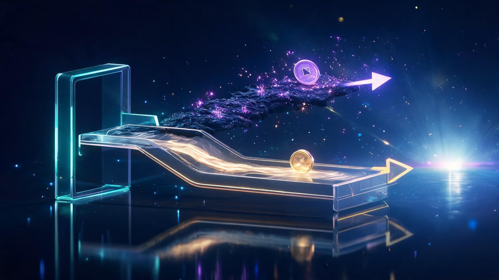
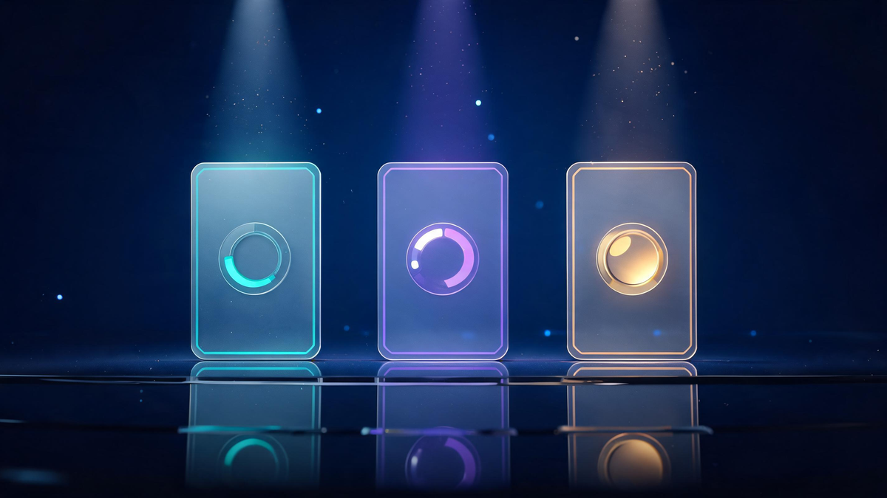
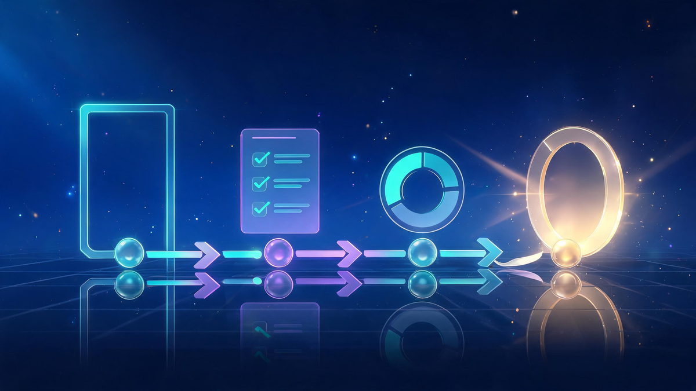

Quantum Computing ETFs in 2026: Investor's Guide to QTUM & More

Quick answer
The flagship quantum computing ETF is the Defiance Quantum ETF (QTUM): 0.40% expense ratio, ~$5.74B in assets, 86 equal-weighted holdings, up ~40% YTD in 2026 and 46% over one year. The newer WisdomTree Quantum Computing Fund (WQTM) runs 0.45% with 57 holdings (~$330M). Diversification paid in 2026: QTUM gained ~40% while pure-play IonQ fell 8%. European investors have UCITS options (iShares QANT, WisdomTree 0.50% TER).
In this guide
Key Takeaways
- QTUM (Defiance Quantum ETF) is the category flagship: 0.40% expenses, ~$5.74B assets, 86 holdings.
- 2026 delivered the diversification proof: QTUM up ~40% YTD while IonQ — the most famous pure-play — fell 8%.
- A newer challenger, WisdomTree's WQTM, runs 0.45% expenses with 57 holdings and ~$330M in assets.
- European investors get UCITS wrappers: iShares QANT and WisdomTree's 0.50% TER fund.
- Quantum ETFs stay volatile — rate-hike headlines moved the whole basket in a single day (Oct 9, 2026).
Quantum computing ETFs let you invest in the entire quantum revolution — hardware, software, semiconductors and big-tech programs — instead of betting on a single winner in an industry where even the stars swing 4% in a day. The 2026 scoreboard made the case: the flagship fund returned roughly 40% while the most-hyped pure-play stock fell. Here's every fund, fee and holding you need to know.
Quantum computing sits at that awkward investing stage where the technology is real, the government funding is flowing, but commercial revenues are still embryonic. That combination produces monster returns and monster drawdowns — often in the same month. Funds exist precisely to smooth that ride.
What Are Quantum Computing ETFs?
A quantum computing ETF is an exchange-traded fund that baskets together companies exposed to the quantum ecosystem: pure-play hardware builders, the big-tech giants running their own quantum programs, and the semiconductor and machine-learning suppliers whose components the industry runs on. Buy one share, own a slice of the whole supply chain.
Why not just buy the stocks directly? Because the underlying machines remain extraordinarily expensive, cloud-metered and years from mass commercialization — our IBM Quantum pay-as-you-go pricing breakdown shows how even access is still sold by the second. That early-stage economics is exactly why the diversified route exists, and why fund flows keep climbing.

ETF vs Individual Quantum Stocks: The 2026 Evidence
2026 ran a live experiment on this question. Through late August, the Defiance Quantum ETF gained +40.5% year to date while IonQ — the pure-play investors most love to chase — was down 8.49%. An investor who swapped the fund for the star stock cost themselves more than 40 percentage points of return in eight months, as 24/7 Wall St. put it: the field keeps beating the stock pickers.
The volatility cuts both ways. On October 9, 2026, a single macro headline — climbing rate-hike odds — sent quantum stocks tumbling, with IonQ sinking 4% in one session. Holding a basket doesn't remove that sensitivity, but equal-weighted diversification across 86 names dilutes any single-stock disaster. And the basket still rides the sector's upside: semiconductor and machine-learning constituents keep posting monster quarters of their own, the kind Nvidia's latest earnings typify.
Top Quantum Computing ETFs Compared (2026)
The fund shelf is small but growing — three US-listed wrappers and two European UCITS options currently cover the theme. Here's how they stack on verifiable fundamentals (all figures as of late 2026):

| Fund | Ticker | Expenses | Assets | Holdings |
|---|---|---|---|---|
| Defiance Quantum ETF | QTUM | 0.40% | ~$5.74B | 86, equal-weighted |
| WisdomTree Quantum Computing Fund | WQTM | 0.45% | ~$330M | 57 |
| WisdomTree Quantum UCITS | — | 0.50% TER | ~$344M | European listing |
| iShares Quantum Computing UCITS | QANT | — | — | European listing |
The takeaway from the table: QTUM is the scale leader by an order of magnitude, WQTM is the focused newcomer, and the UCITS pair exists for European wrappers. Expenses cluster tightly (0.40-0.50%), so the real differentiators are methodology and liquidity — not fees.
QTUM Deep Dive: The Flagship
The Defiance Quantum ETF is the oldest and largest pure quantum theme fund, and its specs explain its dominance: a 0.40% expense ratio, $5.74 billion in total assets (Morningstar, September 29, 2026), and a modified equal-weighted index of 86 global quantum, machine-learning and semiconductor companies — a methodology that prevents any single holding from dominating the story.
Returns have rewarded the structure: 46.11% over one year, 48.11% annualized over three, and 26.01% over five (Robinhood month-end 2026 data). The holdings mix spans quantum pure-plays, big-tech programs at IBM, Microsoft, Google and Amazon — IBM's own live valuation shows how these legacy weights anchor the fund — and the semiconductor suppliers in between. It also pays a modest ~1% yield while you wait for the theme to mature.
How to Choose a Quantum ETF
Four practical steps, in order:

- 1. Define your exposure goal. Pure quantum hardware, or the broader quantum-plus-ML-plus-semis supply chain? QTUM is the latter — most investors actually want that.
- 2. Check methodology, not just the name. Equal-weighted (QTUM) spreads risk; market-cap-weighted concentrates it in giants. Holdings count tells you the concentration story at a glance.
- 3. Compare the fee dial. 0.40-0.50% is the current band — meaningful over a decade, immaterial over a quarter.
- 4. Match the wrapper to your account. US brokers take QTUM/WQTM; European investors need the UCITS versions (iShares QANT, WisdomTree's 0.50% TER fund at ~$344M).
Risks to Weigh
Honest investing means pricing in what can go wrong:
- Rate sensitivity: long-duration tech themes fall hardest when rate-hike odds climb — the entire basket moved on one macro headline in October 2026.
- Hype cycles: quantum sentiment swings on headlines and celebrity comments; fundamentals arrive on a slower clock than narratives.
- Early-stage revenue: most pure-plays inside these funds still burn cash; the basket works because big-tech and semis weight the risk.
- Encryption disruption cuts both ways: quantum breakthroughs threaten today's cryptography — one reason the cybersecurity industry's biggest companies are racing toward post-quantum security, and why wall street treats the theme as strategic, not speculative.
Are Quantum ETFs a Good Investment in 2026?
The data from 2026 settled the central question in favor of structure: when the flagship fund gains ~40% while the most famous pure-play loses ground, the basket has done its job. Quantum remains a high-volatility, early-revenue theme — sized accordingly, an equal-weighted ETF is the rational way to own it.
Frequently Asked Questions
Is QTUM a good buy or sell ETF?
QTUM is the flagship quantum computing ETF — 0.40% expense ratio, about $5.74 billion in assets, 86 equal-weighted holdings, up roughly 40% year to date in 2026 and 46% over one year. Whether it fits a portfolio depends on individual risk tolerance; this guide provides the data, not investment advice.
Which ETF has quantum computing stocks?
The Defiance Quantum ETF (QTUM) is the largest and most established, holding 86 quantum, machine-learning and semiconductor companies in a modified equal-weighted index. The WisdomTree Quantum Computing Fund (WQTM) is a newer option with 57 holdings, and European investors can access the iShares Quantum Computing UCITS ETF (QANT).
What are the top holdings of the Defiance Quantum ETF (QTUM)?
QTUM uses a modified equal-weighted methodology across 86 holdings, so no single stock dominates the basket. It spans quantum pure-plays (IonQ, Rigetti, D-Wave), big-tech quantum programs at IBM, Microsoft, Google and Amazon, and semiconductor and machine-learning names that supply the quantum supply chain.
What is the difference between a quantum computing ETF and a quantitative ETF?
They sound similar but are unrelated. A quantum computing ETF invests in companies building or supplying quantum hardware, software and components. A quantitative ETF is simply any fund managed by mathematical models — it has nothing to do with quantum physics.
Did Elon Musk say anything about quantum computing?
High-profile figures periodically move quantum headlines, but fund fundamentals matter more than celebrity commentary. The structural drivers — government research funding, enterprise pilot programs and the semiconductor supply chain — are what show up in fund performance.
Are quantum computing ETFs a good investment in 2026?
The diversification case strengthened in 2026: the flagship QTUM fund returned roughly 40% year to date while high-profile pure-play IonQ fell 8% — a gap of more than 40 percentage points for investors who swapped. ETFs dilute single-stock risk in an industry where commercial revenue is still early-stage, but volatility remains high.
Keep Exploring
Keep exploring Veritya Daily's quantum and markets coverage: see the machines behind the theme in our IBM Quantum pricing guide, track IBM's share price live, ride the semiconductor wave with Nvidia's earnings breakdown, or catch up on the Dow Jones today.
📚 Sources & Citations (10)
- Morningstar — QTUM Defiance Quantum ETF Quote & Portfolio (September 29, 2026: $5.74B total assets, 0.40% adjusted expense ratio, 42% turnover)
- Robinhood — QTUM & WQTM Fund Quotes (month-end 2026 returns: 1Y 46.11%, 3Y 48.11%, 5Y 26.01%)
- Defiance ETFs — QTUM Fund Page (modified equal-weighted, 86-holding methodology; Morningstar risk-adjusted rating context)
- WisdomTree — WQTM Quantum Computing Fund Overview (0.45% expense ratio, ~$330.5M total assets) & Quantum Computing UCITS ETF (0.50% TER, August 2025 inception)
- Yahoo Finance — QTUM Quote; "Quantum Stocks Fall as Rate-Hike Odds Climb: IonQ Sinks 4%" (October 9, 2026)
- 24/7 Wall St. — "That Quantum Fund Is Up 40% in 2026 and Just Crossed $6 Billion" (August 25, 2026)
- Pluang — "Defiance Quantum ETF Outperforms IonQ Stock in 2026" (+40.5% YTD vs IonQ −8.49%, August 25, 2026)
- AAII — WQTM Fund Grade (expense ratio 19% below category average)
- BlackRock iShares — Quantum Computing UCITS ETF (QANT) Product Page
- ETFdb — BlueStar Machine Learning & Quantum Computing Index Profile